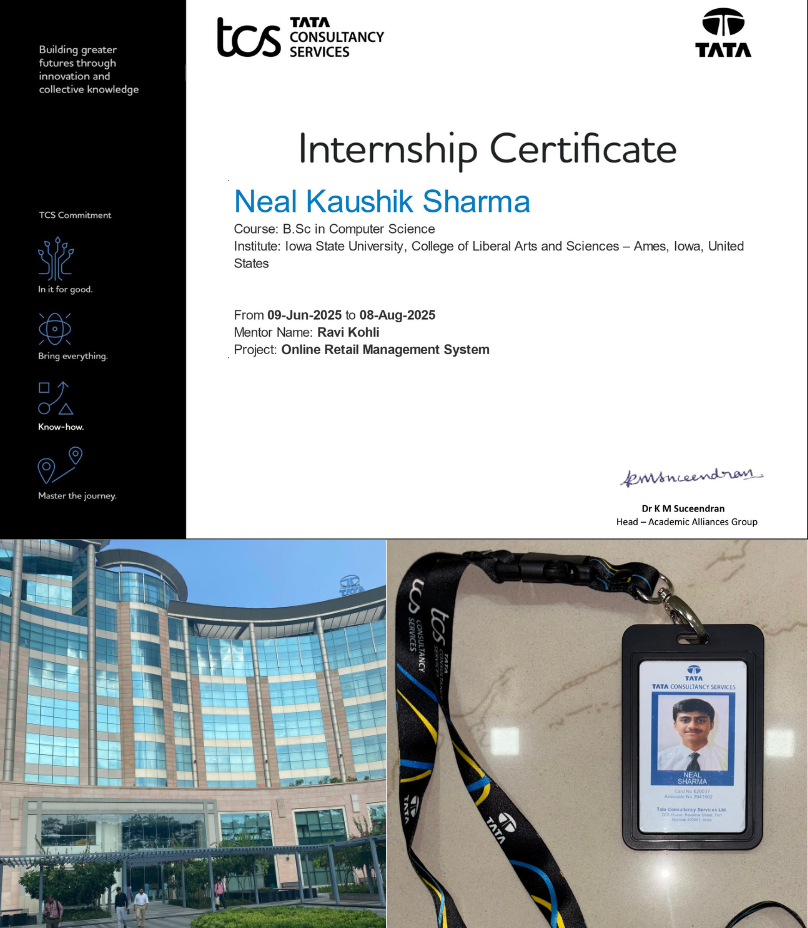

Software Engineer Intern
June 2025 – Aug 2025Tata Consultancy Services
Completed a three-month, on-site internship working with a mentor and a cross-functional engineering team. My primary responsibility was developing an Online Retail Management System, while rotating with frontend, backend, database, DevOps, QA, and cloud engineers to gain exposure to the full software development lifecycle in an Agile environment.
- Developed backend functionality for the retail system using C# and ASP.NET Core MVC, with real-time SQL Server integration.
- Gained hands-on experience with API development, authentication workflows, and backend architecture through direct collaboration with backend engineers.
- Worked with cloud engineers to understand deployment pipelines and Azure cloud.
- Learned frontend fundamentals such as Bootstrap and collaborated across roles to understand testing, DevOps, and QA workflows.
C#
ASP.NET Core
SQL Server
Azure
Agile